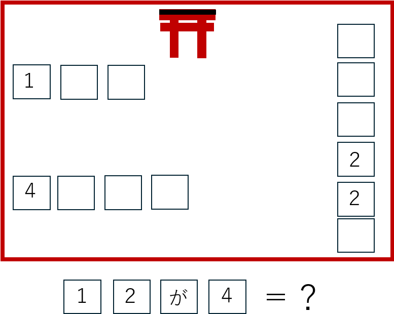
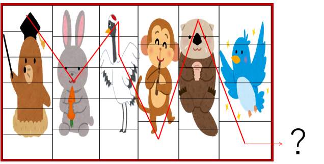
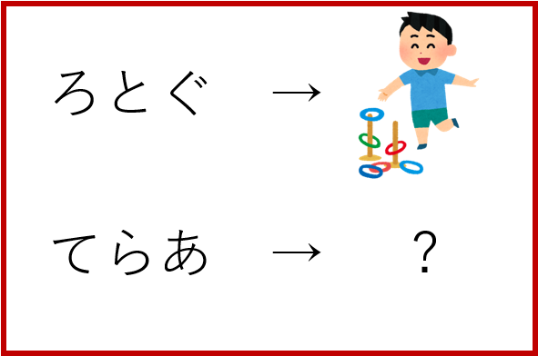
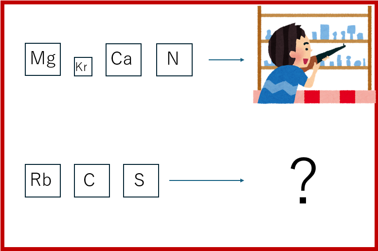

第1 第1問の解説

① 教室に置いてある屋台の名前に注目する。
② 屋台の名前をひらがなにする。
③ 図の空いているところに当てはめると、答えが分かる。
答え：わたがし
第2 第2問の解説

① 図に書かれている生物の名前に注目する。
② 生物の名前をローマ字に直す。
③ 図の矢印がある場所を確認する。
④ 矢印が指している場所のアルファベットを読む。
答え：まつり
第3 第3問の解説

① まず、図の上のほうを見る。
② 上の部分を見ると、文字を五十音順に一文字ずらすことが分かる。
③ そのルールを使って、下の部分も同じように一文字ずつ五十音順にずらす。
④ 変換した文字を読むと、答えが出てくる。
答え：とりい
第4 第4問の解説

① 図にあるアルファベットに注目する。
② アルファベットを元素記号に変える。
③ その元素記号の元素番号を調べる。
④ 元素番号を、五十音の何番目かとして考える。
⑤ 元素番号番目の五十音の文字に直して読む。
答え：ゆかた
最終 最終問題の解説

① 図を見ると、これはカレンダーになっている。
② カレンダーの日曜日のところを確認する。
③ 日曜日のところには「円」が書かれている。
④ 「円」は「えん」と読む。
⑤ 日曜日の「日」＝「にち」と合わせる。
⑥ 「えん」＋「にち」＝「えんにち」となる。
⑦ 「えんにち」を漢字にすると、「縁日」になる。
答え：縁日